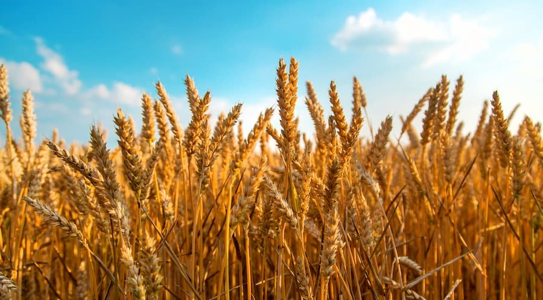
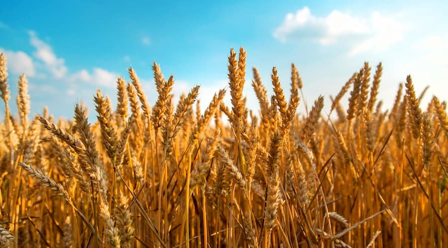

Qual a importância do agricultura do Paraná para o Brasil
O Paraná é crucial para a agricultura brasileira, sendo um dos principais estados produtores e exportadores de grãos. A produção paranaense de soja, milho e trigo assegura a oferta desses produtos essenciais para o consumo doméstico e internacional. Liderando a produção de carne de frango do país, o Paraná contribui expressivamente para o setor pecuário. O estado também tem importante papel na criação de suínos e bovinos. Essa produção de proteína animal beneficia o mercado interno e também garante a exportação desses produtos, colaborando para a balança comercial brasileira. O Paraná possui uma forte agricultura familiar que desempenha um papel vital no abastecimento alimentar interno e na manutenção da biodiversidade e práticas agrícolas sustentáveis. Além disso, parte da produção desses pequenos produtores é destinada à produção de alimentos orgânicos, o que é cada vez mais valorizado pelo consumidor brasileiro.
Ademais, o Paraná investe constantemente na inovação tecnológica da agricultura. Esses avanços ajudam a aumentar a produtividade, a utilizar de forma mais eficiente os recursos naturais e a melhorar a qualidade dos produtos agrícolas. Essa busca pela inovação contribui para o desenvolvimento e a competitividade da agricultura brasileira como um todo. Portanto, a agricultura paranaense é de fundamental importância para a economia do Brasil. Ela contribui tanto para o abastecimento interno de alimentos quanto para a exportação. Além disso, gera empregos, arrecada impostos, ajuda na conservação do meio ambiente e estimula a inovação e a pesquisa no setor agrícola. Todas essas contribuições tornam o Paraná um ator-chave na agricultura brasileira e global.

.png) 
